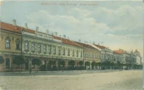
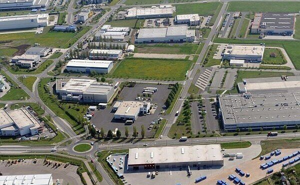
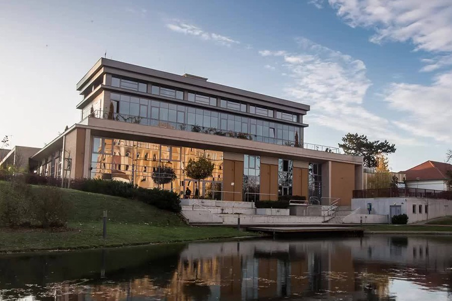

Békéscsaba
Magyarország "legnagyobb faluja"
Egy kis történelem
A város területe már a római korban is lakott volt, de jelentősebb változások csak a 18. századtól történtek
Néhány érdekesség
700
éves az első írásos emlék
Csabáról
60 000+
Lakos
1000+
Rendezvény évente
Városunk Története:

Középkor
Békéscsabát először 1235-ben említik írott
forrásban. A középkorban kis településként
létezett, de a török hódoltság idején szinte
teljesen elnéptelenedett.

Iparosodás
A 19. században Békéscsaba gyors fejlődésnek indult:
1840-ben mezővárosi rangot kapott. Kiemelkedett a
környékből élelmiszeriparával és
kézműves mesterségeivel, majd a vasút megjelenése
(1858) tovább lendítette a fejlődést.

Napjainkban
A második világháború után ipari
központtá vált, majd a rendszerváltás után
jelentős átalakulásokon ment keresztül. Megyei jogú
városként Békés megye közigazgatási,
gazdasági és kulturális központja lett.